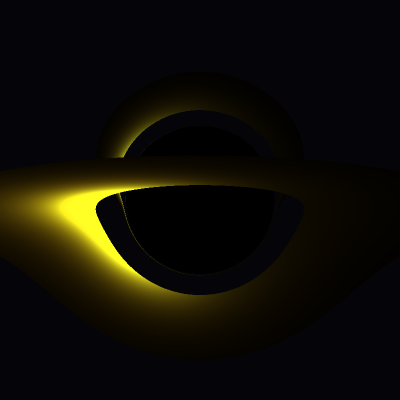
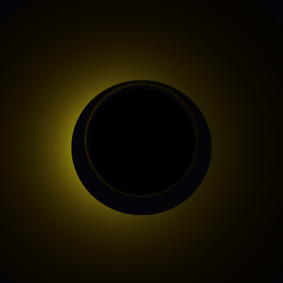
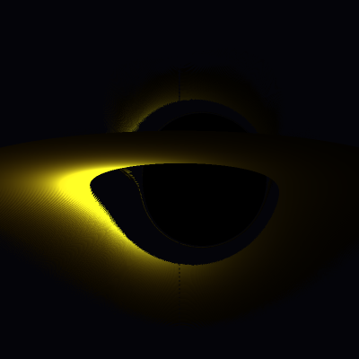
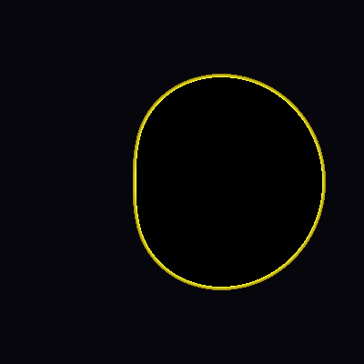
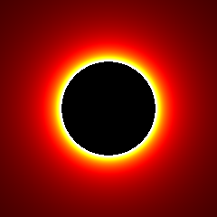

Lensed thin accretion disk, 80° inclination — far side bent over the shadow

Lensed accretion disk, 20° inclination

Kerr disk a=0.9, 78° — relativistic Doppler beaming asymmetry

Kerr shadow a=0.99, 80°

Shadow and photon ring